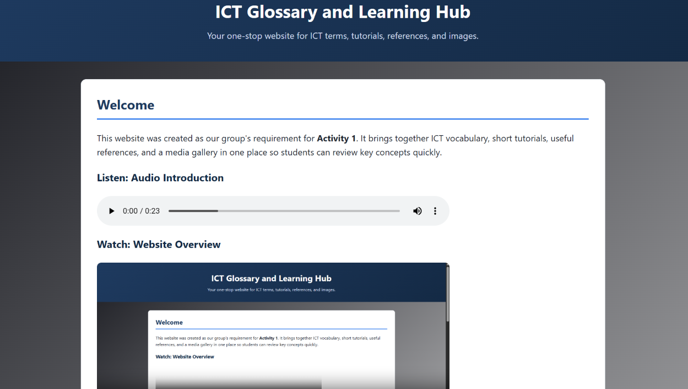

I am an Information Technology student who is interested in technology, programming, and web development. My goal is to improve my skills, gain more knowledge and experience, and become a successful IT professional in the future.
My name is Nicole Quilim Gelina. I am 18 years old and currently studying Bachelor of Science in Information Technology at Eastern Samar State University – Main Campus.
I chose Information Technology because it is one of the in-demand careers today. It also offers many job opportunities and different career paths. As an IT student, I want to improve my skills, learn more about technology, and gain experience that will help me in my future career.
My goal is to become a successful IT professional. I want to use the knowledge and skills I learn to create useful solutions, help others, and build a good career in the IT field.
Skills
Programming Languages
HTML
CSS
Java
Basic C#
Tools
Visual Studio Code
Eclipse
Canva
Microsoft Office
Other Skills
Time Management
Basic Programming
Problem Solving
Teamwork
Communication
Projects

IT Glossary and Learning Hub Website
A learning website designed to help students understand common Information Technology terms and concepts. It provides simple explanations and learning resources that can help beginners improve their knowledge of IT.
A basic voting system designed for high school elections. The system helps organize the voting process by allowing users to select candidates and making the process more organized and efficient.
Developing basic programming and web development skills through school activities and projects. I have worked on websites and programming activities while learning how to use different development tools.
2023 — 2025
TVL-ICT Student
Dolores National High School
Studied ICT-related subjects and developed basic computer and technology skills. This experience helped me become more interested in Information Technology.
Education
2025 — Present
Bachelor of Science in Information Technology
Eastern Samar State University – Main Campus
Currently studying programming, web development, computer systems, and other IT-related subjects.
2023 — 2025
Senior High School — TVL-ICT
Dolores National High School
Completed the Technical-Vocational-Livelihood track with a focus on Information and Communications Technology.
2019 — 2023
Junior High School
Dolores National High School
Completed junior high school education.
2013 — 2019
Elementary Education
Dolores Central Elementary School
Completed elementary education and developed foundational academic and personal skills.
Get in touch
I am open to learning new things, improving my IT skills, and connecting with people who are interested in technology and web development.